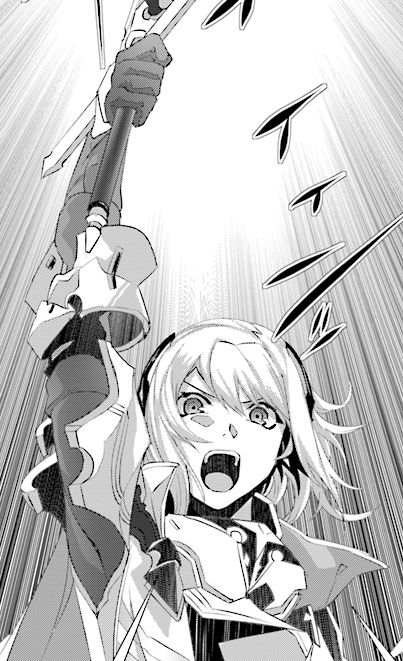
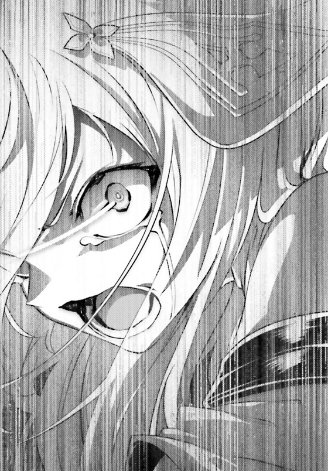
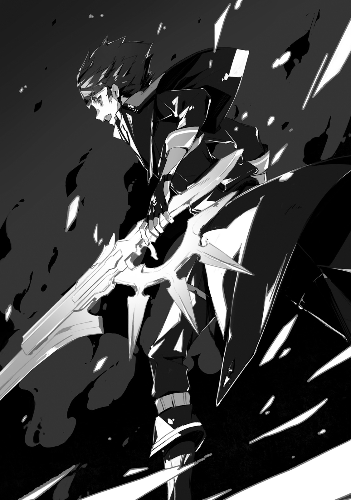

Capital Urzak. A capital of Urza Federation, that occupies northern part of continued. In history, known to Kai, the city was the most advanced one when it came to automation. Window of its high buildings were clearly reflecting blue sky. Green avenues, that span across the city, were well maintained. And then there was government palace, tall twin building, which was towering over its surroundings. This image was still fresh in his memories.
"During the day, government palace windows were dyed in blue by reflecting the sky. And as sun goes down, at evening it becomes red. That is pretty beautiful."
Terminal's underground railroad. There, in tunnel filled with scent of dirt and earth, few dozens armoured cars were advancing over black railway tracks. Kai continued.
"...In case of this government palace, I doubt we'll have time to enjoy scenery."
"As demons are flying around, we cannot launch drones. And current government palace became like haunted house, so I'm looking forward to our assault on it."
TL Note: Demons amusement park :)
Ashlan, who was sitting on driver seat, made a bitter smile.
"Still I'm surprised about this Urza's king private station and it's being connected to abandoned subway. That's just straight path to government palace?"
"Right. And also our Fairin went to check it out yesterday."
Saki, who has been chewing gum, replied. Contrarily to her usual passenger seat, this time she took one of the back seats.
"From there, we're going to attack government palace. And we'll settle it by defeating demons leader."
"That's right..."
From his driver seat, Ashlan took a peek at Saki through mirror. And to his colleague, who was clinging to Rinne on next seat.
"Hey, why are you clinging to Rinne?"
"Because I'm scared!"
Saki replied to Ashlan with strong voice, but not loud enough for everyone around them to hear.
"All resistance soldiers will gather and occupy government palace. There in its basement we'll rescue prisoners. There is high chance of success, if we'll land surprise attack."
"And it will be great opportunity for us to display our skills."
"Then there at great hall on 10th floor, Jeanne-sama and her bodyguards will hold Vanessa's retainers. It is certainly dangerous, but I believe Jeanne-sama and Fairin-sama will pull it off. But, if you'd ask me what aspect of our plan worries me, it would be..."
"Let's hear it."
"Why have we been chosen to attack Vanessa...!?"
"...Eh?"
Voice of Rinne, who didn't expect a human to be so clingy.
"Saki has hobby of hugging woman?"
"It doesn't matter whether it is man, woman or plush, I just wanted to cling to someone!" - Said Saki with crying voice.
"I just cannot believe it is only four people. Both me and Ashlan are going to support Kai and Rinne, and that's all! If on our way we're going to be discovered by demons... Ah, mom, pope, forgive me. I'm not going to live through this winter!"
Saki's head, who closed her eyes, was being gently patted.
"...Rinne?"
"Feeling better?"
Rinne is trying to cheer up human? To this view, Kai completely focused his gaze with such thought.
"Since I heard that... Kai knows you. That's why you're exception, I wouldn't do it to other humans."
Still some reluctance can be seen. Rinne's face looked like a child trying to extend her hand towards big dog.
"No need to worry, I'm super strong. Aside from maybe Vanessa, I'd lose to no one."
"That's so cool... but Vanessa is the problem, right?"
"..."
"What's with silence!?"
"Leave it to me! For Kai's sake, evne if I'll be cornered I'm going to at least take down Vanessa with me."
"Don't be so rash!"
Saki, who has been clinging to Rinne until now, separated from her in panic.
"Rather, Kai... Since yesterday you've been so calm. I mean it is only four of us..."
Attack unit that consists of only four people. This was result of yesterday discussion. Only Kai and Rinne are going to fight Dark Empress Vanessa. And if someone would have to support them, then Kai would only think of these that he personally knew in Resistance Army.
"...And Ashlan seems to be quite calm?"
"I'm not calm. All this time my hands have been shaking while holding car's handle."
Saki's colleague on driver seat, answered with a mix of sigh. The plan has been decided three days prior. Top brass of round table approved the plan, and then Saki and Ashlan were notified about it late night at day before yesterday.
"Ashlan, how is Neo Vishal doing?"
"I contacted them early this morning, and it seems to be still safe. Well, it is all up to Vanessa whims after all."
Ashlan's shaking hands are on handle again. TL Note: I don't get a bit this part, I mean he is driver why again. jp. アシュランが、ふるえる手を再びハンドルへ。
"Look, Saki, I'm holding the handle like that is purely because it helps. If we're going to defeat demons, we'll get high praise from all over the world. I want to be praised and also reward money. And I wish to make this damn world even a little better. It is ok."
"...Ashlan."
Kai looked at Ashlan, who has been busy driving, in profile.
"Comparing to Ashlan that I know, you're far more strong."
"Huh!? I told you I don't get this story of yours..."
"I have expectations. By the way Rinne."
Once more he turned back.
"Since it is important I'd like to make sure. We, who travel in such big numbers, are not going to be discovered by demons?"
"Yea, humans don't have any magic power so demons will not be able to sense anything." TL Note: Yeah Rinne doesn't care about being discreet about her non-human nature :)
For example the way they hide might be useless against cryptids sense of smell. But for demons, who excel in magic perception, but with weaker other senses, it would be impossible to notice humans underground.
"Then we'll proceed as usual."
"W-well, we're already arrived. It is time to knock the door to hell."
Said Ashlan with dry voice. Then he pointed ahead, cars ahead of them slowly started to lower speed.
"...It is finally a time."
Saki who was sitting at back, took her grenade launcher nearby. This was central part of capital Urzak. Just above the railway tracks was a secret door of private terminal. And once opened, there would be government palace.
[To my comrades who gathered here, I have something to tell.]
All armoured vehicles stopped at once. Every soldier could hear Light Knight Jeanne voice from their communication devices.
[First I'd like to give my thanks for believing and following me here. My friends, there is no doubt that your loyalty and courage up until know has inspired a hope into humanity.]
Over and over again, the voice of their leader echoed through the tunnel, which has been illuminated by lights of their cars.
[Some of you might be uneasy since our preparations amounted only for three days... But I want you to recall: just how many years we've been already fighting?]
Everyone seriously listened.
[How long is our history of resisting against mighty demons rule? I already lost count of how old it is. We already have been fighting for so long. I believe it is been in preparations to this day.]
Resistance leader proclaimed.
[It is been more than enough by now. Our will to fight is already honed. It is time to strike back. My friends, let's rise from dark underground!]
If it would be peaceful times, then now would follow burst of applauses.
It starts.
If the fuss would raise from underground, then demons above ground would notice them and everything will be lost.
Everyone understood it. That's why every soldier instead shown it by getting their guns ready.
[Let's go!]

"Rinne, Saki, Ashlan, follow me. As per plan we're rushing up."
With Jeanne's order, Kai jumped from car. Their goal was above ground. Passing through dozens of soldiers, they went towards inner part of railway line. The wall, that has been there, was already demolished, and before them was path covered with beautiful tiles.
"Kai, is that private terminal?"
"Seems so. Rinne, don't let go of me... Well, it is obvious."
With Drake Nail on his back, he run forward. Kai has been trained to run like that without losing his speed, and Rinne had no problem to keep up with him and run by his side. The problem was two people behind.
"Hey, wait, guys, you're too fast!"
"Kai, wait already! How you run so fast with gun on your back!?"
"Hey, Kai, how about I'll take these two and fly? This way we'll not lose time."
"Let's save it for emergency. For now keep your wings hidden."
Rinne's nature should be secret from Resistance Army as much as possible. But as for Kai's unit, that had Saki, Ashlan and Rinne herself, if their life would be in danger, there is need to hesitate to use magic. He conveyed that to her.
"Here is escalator. Saki, Ashlan, once we'll climb it, we'll be on surface."
Escalator was covered in dust. They run up through escalator that has been without power for several decades now. There, twenty meters above underground, was private station exit.
"Kai, here!"
"Jeanne! Sorry making you wait."
Daylight could be seen through cracks in ceiling. This light illuminated both Jeanne and her bodyguards. And Fairin who was peeking out of exit's door in order to check situation.
"Fairin, how palace's entrance looks?"
"Three demons, but it seems they are just passing by. Will not pose a problem."
"As we suspected, demons do not expect us to attack government palace."
Light Knight raised her hand. And in that instant everyone around them became quiet. The silence gave chills, but afterwards.
"...Do it."
Explosion. Bunch of explosive shattered the private station door, that looked like a ceiling, into pieces. From newly created hole, thick black smoke was coming.
"Let's go!"
Passing through dust and smog, Kai jumped out of underground. Dark clouds could be seen above him. And as if reflecting this dark colour, a tall building was towering surroundings.
Urza Government Palace.
"This is...!?"
Biggest building in capital that has been occupied by demons. Half of the tower in the twin building has been destroyed. Its glasses were broken and cracks covered its walls like a spider web.
"Humans!?" TL Note: I'll be marking demon speech with bold(original use different quotes for their speech).
On vast stairs that lead to government building gigantic jet-black demon roared seeing Kai emerging out of smoke. This was similar to Daemon that he encountered at 9th Terminal, having the same curved horns and jet-black wings. It wasn't weak like gargoyle, it wielded various magic spells of enormous strength.
"Why are you surprised?"
With Drake Nail in his hands, he quickly rushed towards stairs landing.
"It originally belonged to humans. Nothing to be surprised about."
"Freeze!"
Dark magic circles appeared and from them cold wind started blowing. Stairs handrails quickly became ice pillars and stairs themself became covered in thin ice. And it is been crawling towards ground, but before it could touch his feet, Kai jumped mid-air.
"I know this magic."
Among footage of previous battles in MDA, there were also footage of magic that humans encountered in past. Kai kept in his head all its powers and effects.
"You bastard...!?"
"Let's go" TL Note: The short stuff like 行くぞ are hardest to translate... Because it always look lame in english.
While it aims next magic with his hand, Kai swung down his Drake Nail. Drake bullet explodes. But as smoke from explosion starts to cover Daemon body, Kai hears warning from behind.
"Kai, above! There is group of gargoyles!"
There above, where Saki pointed, on rooftop of government buildings were stone statue that looked like a decorations... Then from their backs wings were spread, and alongside with their weird screams they jumped towards them.
"Don't seem like it is going to be easy to break in..."
"What are we going to do... We cannot waste time here, right!?"
"Let's deal with all at once."
While there was still some smoke coming from its muzzle, Kai aimed Drake Nail.
"Lighting bullet"
Telluric current. Like short javelins, lighting bolts fired from the ground and hit all flying gargoyles, which made them fall down. Kai moved to run toward entrance, as if ignoring this spectacle.
"That was cool! Hey, Kai, what was that!?"
"These bullets are made in my world for use against groups. But their number is quite limited so I'm keeping them in reserve."
"Wow, wow, if you have something cool like that, then you should say it from the beginning!"
"...Well yeah."
Of course both Saki and Ashlan didn't notice. The same seem to be true for Jeanne's unit. Behind Kai was smug Rinne. With full of pride she was giving him glances, as if appealing: "Praise me later, ok?" There was no such thing as lighting bullet. In actuality it was just name, that Kai came up to match Rinne's magic. No one will doubt them if he'd just say it is variant of Elf bullet.
TL Note: smug Rinne is cute :D
"We're doing good."
From behind them came Jeanne in her silver armour.
"Is it not difficult to run in such armour?"
"It's thickness just about right for me, no problem... Everyone, spread!"
First battalion that was following Jeanne lead, broke into entrance to first floor. And the second battalion surrounded government palace to prevent demons from entering.
"That was quite interesting bullet."
Besides Kai who run toward entrance, appeared running figure of tall woman soldier. Carrying Shamshir, curved sword that he wasn't well familiar yet, Fairin said almost as if whispering.
"Lighting attack with such vast range. It has terrific power."
"Well, I've been saving my bayonet."
"But you didn't pull the trigger. While you did start pulling, you stopped half-way through. It certainly wasn't fired by it, am I right?"
"..."
"That girl, her name Rinne I think? From the beginning I felt she was weird."
Did she see it? From far behind, while everyone was focused at gargoyles, this female bodyguard was keeping eye on Kai's hands. Not only her sight was abnormally good, but her intuition was right on spot too.
TL Note: Being popular is hard, even cool Fairin keeps eye on you, hero-kun
"I only want to hear one thing from you. You and that girl of yours said that you're going to fight Vanessa. You're not planning to go back on your word?"
"No."
"Understood."
She had no desire to ask further questions. As if saying that, she run toward her master.
As one would expect of warrior who fought demons for so long.
No wonder Jeanne made her a personal bodyguard.
Commander and her bodyguards were leading the attack. Following them behind were dozens of Resistance soldiers that stopped in first floor's hall. This squad will be responsible to intercept demons that will reach this place.
"Captain, I'm leaving this place to you."
"Yes, sir!"
Not even sparing a glance to the saluting soldier, Jeanne's bodyguards run through emergency stairs. Following behind them Kai sped up and chased after Jeanne.
"Jeanne, this right place for us to go?"
"No mistake about it. Both central elevator and stairs would make us to stand out. So taking detour with emergency stairs is only way."
"...Certainly, there are no signs of demons."
From third floor to fourth. Then they run up from it to fifth floor. Kai's unit was aiming for top floor, while Jeanne and her bodyguards towards center of government building, 10th floor. Going like that, they would be able to reach their destination within few minutes. But for Kai, rather than feeling impressed by how smooth it goes, it was worrisome.
"Rinne, how it is?"
"Uhm, I don't feel any strong presence of magic. But it is rather surprising. When I though Vanessa, she would definitely do..."
After jumping over one step of stairs, Rinne looks up. Her gaze was focused on single point in space above.
"Kai, look there!"
"Imp!?"
It's body was only few dozens centimetres tall and it was looking at them from above. Corresponding to its small body, it was pretty weak and had a little magic power. Not only that but it was able to use only single spell. But Kai knew that this spell was the worst possible one.
"This is bad... Jeanne, hurry up! It comes!"
Summon spell. The spell that only existed among demons. Imp was able to summon only single demon, but it was able to call much more stronger demon. Dark circle appeared on wall. Hearing sound of cracking wall, Kai with Rinne together leaped from 5th floor stairs to 6th floor's. Then wall broke, with destruction of government palace bulky wall, from there appeared a hand which was thick as log.
"Huge demon!?"
It was high ranking demon, that not only had a body of titan, but also wielded enormous magic power. With that hand, it grabbed one of the bodyguards that run behind Jeanne.
[Sound of scream]
It was a scream filled with fear. The huge demon, as if catching insect, grabbed soldier with its hand. In that moment.
"Slow"
Fingers of the gigantic hand were severed. Captured solder easily slide off from the hand's palm. Fairin, who stood on top of ventilation duct by the wall, caught him by the scruff of the neck.
TL Note: I'm a bit unsure here if she caught the falling guy, or not
摑まれていた傭兵があっさりと掌から滑りおちる。その首根っこを捕まえて受けとめたのは、壁に配置された排気ダクトに立つ花琳だった。
"....Human!"
Huge demon roar could be heard. With a scorn on her face Fairin raisen her right hand. Shamshir, which just now cut off demon's fingers, was pointing toward demon neck.
"Jeanne-sama, go ahead first."
"Fairin!"
"Its body is strong and thick. Which has bad affinity with guns. I didn't expect that I'd have to leave your side, but I have to."
She glared at this 10 meters tall monster.
"This is just wooden doll. I'll deal with it quickly and catch up. No need to worry."
"...I'll be waiting at 10th floor"
Light Knight and her bodyguards started to run again. From below could be heard sounds of destruction, but it belonged not only to Fairin and huge demon fight. Resistance soldiers on first floor already engaged demons too. From seventh to eight, and then to ninth floor. While climbing in silence Jeanne suddenly turned her face towards Kai, who was behind.
"Just saying: there is no need to worry about me."
"..."
It seems she saw through his worries. While her bodyguard Fairin was fighting, for Jeanne facing Vanessa's trusted subordinates would be too dangerous. This is what Kai was wondering on whether he should say it or not.
"Even if we got with ease on this floor, both me and my bodyguards will be able to defend ourself."
"...Even without Fairin?"
"Of course. As leader I ought to be the bravest!"
She quickly rushed ahead, leaping towards 10th floor and going into passage, that lead to great hall, without waiting for either Kai or bodyguards.
"Wait, Jeanne!?"
To Kai it looked surprisingly reckless, considering her being commander. If demons would setup ambush there, then most likely you'd meet attack by magic. With bodyguards, it seemed meaningless for commander to rush ahead.
"Kai" - said Rinne, who was right behind him, and opened her eyes wide - "...I feel strong magic power, it is dangerous there!"
"Jeanne, stop!"
Light Knight, who set her foot into hall, have been struck by lightings from dozens of dark purple magic circles. Similarly to Rinne's magic, the hall has been covered in lighting. So what would happen to human that would dare to dash in? The answer was obvious, and that's why Kai doubted own eyes.
"Kai, even after that you'd be still worried?"
Lighting has ended. Remnants of magic danced around like falling snow. Commander, clad in knight armour, calmly stood there.
"...Elf's spirit garments!?"
"That's right."
Light Knight answered to astonished Rinne, with one eye closed.
"We took Holy Light Garments from elven village in battle with cryptids. It is treasure with unparalleled magic resistance."
TL Note: Isn't that totally OP item?
Powerful magic was symbol of demon race. Without doubt a person, that wasn't afraid of it, was fitting to be a knight that liberates Urza Federation.
"Go."
From within inner parts of Great Hall, a four-handed Daemon crawled out. While facing toward it, Jeanne pointed toward passage on opposite side.
"Appearance of her subordinate proves that above there is Vanessa herself. And you're the one who should defeat her, right, Kai?"
"...I leave it to you then."
Without looking back at Jeanne and her bodyguards, Kai went toward emergency stairs. He aimed for floor above.
"Saki, Ashlan, attach it to your hand, while you have it on, demons will not be able find you."
He threw armbands towards both behind.
"Rinne, with it should be fine, right?"
"Yeah, since it is angel barrier magic... I mean, it is human tool that imitates angel barrier."
It is too Rinne's magic. Using magic power it conceals caster from outside world. It might be not so effective against cryptids with dragons that poses excellent sense of smell. But against demons and spirits it works perfectly well.
"Saki, Ashlan, don't separate from me and Rinne. Even if it is just few meters, but armbands will lose camouflage function."
15th floor, 16th floor, and then they stopped at 17th floor. Following along the passage, their aim was in north of the floor.
"Hey, Saki, this is the place, right?"
"Well, if 30 years old blueprints are correct, then yes."
Saki was tightly grasped the map, and behind was also Ashlan who walked alongside. The place had illumination. Floor was so beautifully polished that you could even see your reflection in it. In contrast with ruined building appearance outside, inside it was really beautiful. Not only it was luxurious in its looks, but also remained functional. Something that one wouldn't expect of demons nest.
"...Now I think about it, seems Jeanne's expectations were spot on? Portion of building still retained electricity."
This floor was illuminated with electricity. Not to mention even elevators, that are not supposed to carry anyone, was still powered on.
"Power generators are still alive. But pretty sure they are maintained by captured humans, rather than demons. I've been told that another unit will rescue them."
Ashlan, who carried machine gun, carried on.
"So, Kai, we're going to take power room... W-wait, what is that!?"
Suddenly they could feel heavy rumbling. Was that Jeanne's group fight? However there is no sign of it ending. Thud, thud... it was approaching them like it had own will. Huge body filled the whole passage. Rhinoceros like monster appeared from the corner. Magical beast Jabberwock. It was beast that belonged demon with enormous magic power. Its lowered head displayed crooked horn, and rumbling approached together with the beast.
"
"Wait, Saki."
Rinne immediately stopped the girl who placed her finger on grenade launcher trigger.
"It is ok, that thing will not find us."
"...R-really?"
"If we'll be discovered we'd have to run quickly. Standing still there would make us crushed"
They stopped and leaned closely to wall. Before their eyes was a monster, like a gigantic elephant, walked alongside rumbling sounds. Even if you know that it is unable to see you, it is still scary like hell. TL Note: It is mostly Saki who is scared.
"As expected of Vanessa's den. Something like that just walking around..."
Jabberwock disappeared by corner in their back. Once they were sure that sound of it footsteps disappeared, they started walked again. In direction from where Jabberwock came. Power room. As soon as their entered room with dusty machinery, they closed door.
"Ah damn... I'm pretty sure I just lost 3 years of my life."
The girl, that was holding grenade launcher, was pale and leaned against wall.
"Well, we arrived at our destination. Ashlan, I leave that to you."
"Yeah, I can do it even with my eyes closed."
Ashlan looked over switchboard. There he hold a lever that controlled the whole building power supply. Pulling down the lever would cut off power.
"This is for our retreat, right? If it turns out to be impossible to beat Vanessa, we'll cut off power to create confusion among demons and ran away. Is that ok, Kai?"
"Yeah, you'll get signal from me."
"Do it at the best possible time. We only have to pull lever but... Is that really ok?"
"Yup."
Rinne, who stood by door, answered.
"We, with Kai, are going now. You two should wait here. Most likely, if you'll remain quiet here deep inside, demons will not bother you. I think."
"Don't be reckless. That's all I and Saki want to say."
Both of his colleagues saluted him in Resistance army way. Kai, together with Rinne, exit power room through the door. They were again in 17th floor passage.
This building has 20 floors, and Urza king office is at 20th floor.
Highly likely that Vanessa will be there.
He swallowed down saliva and put his hand around heart. After waiting for its beating to calm down, Kai turned towards Rinne.
"Thank you, Rinne. It was really difficult."
"Yeah?"
"I know you dislike being near other humans. Until now we've been with Resistance people and then Saki with Ashlan."
"...If Kai is going to praise me, I can endure it, you know?"
TL Note: Rinne is such good girl... She needs some pats.
She replied in somewhat embarrassed way. And then she fully spread her arms, afterwards her wings spread out of her back.
"Yep, after all I'm better this way."
"Well, then, let's go."
He peeked at the passage ahead from the corner. There were no demons or magic beasts. Unless something unexpected would happen, with Rinne concealment magic they are not going to be discovered. But the moment they step forward, sound of sirens pierced their ears. It notified about presence of intruders. In this situation, they are definitely were intruders
"What!? My barrier didn't work!?"
"It is... Surveillance equipment is still on!"
Rinne magic created camouflage by obstructing light. Similarly how it was useless against cryptids sense of smell, it was also useless about infrared sensors that could detect through body temperature. Even though it was understandable for Kai, but he didn't expect that these sensors are still operational.
Monitoring equipment was a product of our technology.
Without someone maintaining it, it would stop working after several months.
Not to mention, it ignored passing Jabberwock.
"Humans tricks are occassionally useful too"
Like he has been thrown in ice cold sea, chills run through his whole body.
"This thing sees body warm, right? It detected spirits who pass through walls, and even sees through angel barriers. But who would expect humans to be caught in it."
There was sinister noise. As if heated butter, the wall on ceiling started to melt. From the whole in ceiling, Daemon has descended.
"...Kai."
Rinne voice was trembling. And as far as Kai knew, it was first time she trembled before demon.
"This demon is pretty dangerous."
"Yeah... Just by looking at it, I can understand."
The grey miasma that spread from its whole body told how powerful it was.
"What are these wings?"
Daemon stared at Rinne's wings.
"You're the one who guided this human here with your magic? These wings are that of angles? But why there is something of our kind mixed in... What is this confusing..."
"If you like talk so much, I'd like to ask you something."
To hide Rinne, Kai step forward before her.
"Are you the one who changed building monitoring system?"
"It was wisdom of her highness Vanessa"
With pride Daemon spread both of his hands.
"This capital is covered with monitoring network, it can see through angel barriers and detect invading spirits. Truly wasted on humans, so we used it."
"..."
"And managing this equipment is easy with humans."
It was formidable fortress. That's why demons decided to settle here. With captured engineers, they could continue running it up until now.
"Moreover, Her Highness was very pleased to hear about your invasion. Just why you rushed towards own demise is pretty interesting question. It picked her interest."
"Then how about guiding us to Vanessa's place?"
"Such amusing toy stands before me."
Miasma was emitted by demon's whole body.
"There is no reason to let you pass."
"Ah, I see then."
Pure white smoke enveloped the corridor. It was smoke grenade. Kai threw it in order to obstruct demon that was casting magic.
"Tch, what is it...!?"
"First time seeing smoke grenade? Inside building it should be effective against demons."
Demon's confusion lasted only few moments. Kai run away in opposite direction to power room. While piercing sound of alarm no longer could be heard, shivering killing intent arose.
"It is chasing us!? Rinne, camouflage!"
"...I was careless, they put mark on my magic."
While biting her own lips, Rinne continued:
"Whenever I'd try to hid in this building, they'll be able to find me."
"Then let's go up."
They rushed towards emergency stairs. There they went from 17th to 18th and then to 19th floor. There on 19th floor stairs landing, Kai opened his eyes wide. Wall was in fire. Steel staircase was wrapped in blazing fire. There was a scenery of fire sparks blowing.
"There are imps too...!"
There were small demons, shining with bright red. And not one or two too. Kai saw dozens of magic circles above to appear. These summoning spells brought high ranking demons.
They expected us here.
What should we do... If we'll not break out somehow, we're going to be surrounded.
There are two emergency stairs. One is already destroyed, and only one remain and lead to the corridor.
"We go there!"
He took Rinne's hand and run.
"Stop, Kai, it is dangerous!"
From behind he have been pushed further in. He bended forward from it. While Kai was stumbling he saw that passage was blocked by huge pile of ice. If Rinne wouldn't notice it, he'd be swallowed by ice. And now the ice cage already separated both of them.
"Rinne!?"
"...It is ok, I'll be fine so."
The girl who confronted horde of demons, firmly moved her head towards him.
"Go, Kai. With me by your side, they'll chase us anywhere. Go ahead and I'll catch up with you soon. After that we'll defeat Vanessa together."
"But..."
"Please, go!"
Her last words, were almost like a screaming plea.
I understand.
Rinne is right.
Even now Jeanne and Resistance soldiers are holding demons in check below. He cannot stop here.
"You absolutely must follow me after! Promise me!"
He turned his back to her. He clenched his fists so firmly that his nails almost pierced his skin, and biting his lips Kai kicked floor.
Young human left. He didn't abandon her or escaped. There above was Vanessa and he run in order to defeat her. That was their promise.
Right, Kai?
You believe in me and going to wait for me there, right?
For Rinne everything was disgusting. She hated it. She hated demons treacherous nature. Among 5 races their disdain for other races was extreme. She hated savagery of cryptids. Among 5 races they were most crude and vulgar. She hated spirits bizarre nature. Among 5 races they were hardest to understand. She hated stubbornness of foreign gods. Among 5 races they were most prideful. She hated humans fragility. Among 5 races they were weakest and cowardly. And then... Being a mix of every other race, she hated herself the most. Despite that he wasn't like that. He didn't look at her with fear, and didn't have a look of disdain. Contrary to that...
[Let's wait until you'll calm down]
He embraced her. That's why she wants to be with him. That's why she wants once more to feel his body warmth.
I hate it, Kai.
If you die before I'll come... I hate it.
She turned her head over there. There was Daemon who destroyed emergency stairs exit. And in addition to that from melted parts of walls and ceiling appeared grotesque looking demons. They stopped before her, as if they saw weirdest thing ever.
"I feel it, it smells of angels."
"But there is also demon's smell....?"
"No, there is also elf's. And it even smells of dwarf."
"Draong, even spirit smell."
"What is it? Just what are you...? What a botomeless mix of smell and magic power..."
Demons killing intent arisen.
"That's what I'd like to hear. What exactly is am I, tell me."
Facing in opposition to demons. Rinne continued to talk, while looking over high ranking demons.
"I don't understand what am I myself. But I know one thing - I really hate you guys!"
She expanded her Tenma wings. The girl by the name Rinne started to emit magical power from her whole body. Power that belonged to all races. These mixed in harmony created unique shine that belonged to her alone.
"I want to be with Kai! I do not know what is going to happen to these who obstruct me!"
Government palace, 10th floor. Four arm Daemon roared
"Weakling!"
Its right arm, which was thick as log, smashed one of the bodyguards against wall. All the while receiving multiple shots from machine guns. It wasn't completely immune like a gargoyle, but it was covered by magic that eroded approaching bullets before they'll be able to hit. At most it was effect of rubber bullets. Since bullets impact was diminished, its body couldn't be even scratched with it. To that...
Light Knight Jeanne sword, cut off the demon's arm that became like whip.
"!?"
"Just shallow wound? But it was made with angelic magic [Divine punishment]. I didn't expect it to be cured so easily."
"Angel magic tool!?"
Demon didn't try to avoid Jeanne's blade. Instead he put forward two of his hands toward swinging blade and caught it.
"Tch"
"Weak. Even if you human weield angel magic sword, it is not a big threat... Let me show you a real power."
From demon's palm arose bright read fire. It formed something resembling big hatchet. With it attack Jeanne which should tear down her armour and burn her alive... Or at least that it is what supposed to happen. Fire sword magic immediately disappeared.. The instance the sword touched Jeanne, flame blade became bunch of sparks and dissolved.
"Armour!? No, under it is Elven spirit garments!"
"You noticed."
Said leader of Resistance who jumped away. After fire sword attack under the armour could be seen thin silk dress. It was thin as paper, but these garments were able to erase any demon magic. Armour itself served only as male disguise. The actual defence was provided silk dress under. It was holy light battle attire and greatest treasure to elves, which boasted highest magic resistance. It served as embodiment of Light Knight(Holy Light Knight) and trump card against demons.
"Do you want to kill yourself, human!"
"..."
There could be only one response.
"Cancel disguise. [Moon bow]."
Jeanne sword was enveloped in light. From the sword angel magic shined. And it transformed into beautiful bow with multiple gems in it.
"Pierce it!"
Magic arrow pierces through big demon body as if it is thin air and pins it to the wall. But before she is able to comprehend the situation, a sudden dizziness makes Jeanne fall to her knees.
"Jeanne-sama!?"
"...I'm fine, Captain, defend your position!"
Her bodyguards rushed over to support their leader. Meanwhile a tons of sweat were falling through Jeanne cheeks. A very cold sweat.
"Kill myself, you said?"
Forcing her trembling body Light Knight started to stand up.
"That's right, without such resolve there is no way for us humans to defeat you demons!"
Both angel bow and elven spirit garments were powerful magic tools, which were suitable for use for races that wield magic. For humans, who had no magic power, using it would snatch away all stamina in instance. And even life itself. She wore a burial clothes that could take away her life. Jeanne continued to fight side by side with death, and everyone among Resistance soldiers knew it. That's how her respect has been earned.
"It is nothing, comparing to a fight with demon hero..."
She thought of Rinne and Kai who came from a world with different history. Actually Jeanne still didn't completely believe Kai's story. Just how did the history get to the point where humanity would triumph in Great War? But he said that he is going to show a proof. By challenging demon's hero. Comparing to that insane recklessness, wearing spirit garments that consumed her own life was nothing. Jeanne already resolved herself.
"Jeanne-sama!"
Suddenly she heard scream of her subordinate. And there was sign of something from above. Ceiling suddenly broke with noise. From there suddenly appeared a monster in a shape of hound. Cerberus. It was monster that resembled legendary magic beast. Its poisonous fangs were aiming at the top of Jeanne's head.
"I'm sorry to make you wait, my Master."
Its fangs only reached empty air. In the instance Shamshir flashed.
"It is been a bit crowded on my way, so I had to clean up while coming here."
"...I've been covered in sweat, you know" TL Note: The meaning is a bit unclear here as I feel it is half-joke complaint from Jeanne about Fairin being so late.
Fairin, the bodyguard, Resistance leader, and unexpectedly Jeanne's adjutant. She, whose duty was to guard Jeanne, barely made it in time.
"...You, bastard... I heard about you..."
Muffled voice of magic beast could be heard. Its fangs were smashed and it looked at Fairin, who was holding Shamshir in both of her hands, with contempt.
"There was human who boasted great strength... Dragoon!"
"Maybe."
Shamshir, whose blade was bright red, was made of drake fang. Kai's bayonet Drake Nail at most was just its imitation. But in Fairin hands was real thing. It was the highest grade of sword made from ingredients that came from cryptids. As it resembled dragon's fang, she was known Dragoon among demons, who were scared of it.
"Our soldiers are still holding on lower floors. But they are reaching their limit too."
"...We are depending on results from top floor."
"Yes, Jeanne-sama stand behind me, I'll go."
Urza strongest soldier said and readied her Dragon Fang again.
Urza Government Palace, 20th floor. Making his last step in climbing, Kai's breath shown mix of fatigue in it.
"Finally..."
At last he was on top floor. While Resistance used all of their forces to attract demons attention, Kai was finally before Dark Empress dwelling place.
There is no sign of pursuit, it seems I was able to get away.
Now I have to wait for Rinne.
In order to let Kai to escape, Rinne had to take a risk to move separately. There were emergency staircases at north and south. Kai came through south ones, while Rinne, who has been surrounded by demons, will be breaking through the north staircase.
"Rinne... Come..."
Both made promise to defeat Dark Empress Vanessa together. Stepping out from emergency staircase, he followed into 20th floor corridor.
"Wha!?"
Astonished voice escaped his mouth. There were no walls or corridors. Instead the whole 20th floor became a single big hall. And in this big hall Kai could see single figure of demon. Under lights, where once was a wall that now became debris on floor, was standing single beautiful throne. And, once a seat of king, it became a seat of this demon. There was Dark Empress Vanessa.
"Welcome, human."
"...You're..."
"Don't be so stiff. This is but a my place alone. With my subordinates it would be too cramped, therefore there are none."
TL Note: Note that she speaks somewhat archaic and weird way in japanese, but it is difficult to translate it.
It was voice of demoness with not only bottomless dignity and weirdness, but feminine allure. Succubus... She looked beautiful. Her dark hair had dark purple reflection under light, and she had crimson red eyes and lips. At first glance one would see a bewitching demoness.
The one who captured the human king and ruined country since long ago.
There is not many demons with such load of legends...
Demon hero. She, who is also known as Queen, chuckled seeing Kai.
"Would you not lower your weapon?"
"...What did you say?"
"No one would expect a succubus to be a strongest demon. Everyone expect some Daemon or magical beast, but seeing me humans just lose all will to fight. Saying something like 'I cannot point weapon at such beautiful maiden'. How about it? Instead of wasting time killing you, you could took a pose to adore me."
"..."
"What is it?"
"That's not true. Your true nature is..."
Pointing his Drake Nail towards her, Kai's voice resonated through the hall. He heard from Rinne, just what kind of demon is the one called Dark Empress Vanessa.
"You're the one who stand on top of these unpleasant Daemons and magical beasts. And actually you pretend to be a mere succubus in order to trick humans. In reality you're battle maniac that ready to attack other races at any given opportunity. That's you."
The Succubus looked at Kai with puzzled expression.
If it wouldn't be for Rinne, I'd be thinking the same.
I wondered what sort of dreadful appearance, Dark Empress Vanessa could have.
On outside she is but a beautiful woman.

The gap in her ominous clothes exposed cleavage, and her crossed legs were certainly very beautiful. It would be even scary to imagine how many humans lost both their souls and dignity to this bewitching beauty.
"Fuh... Ahahahaha, aren't you funny one?"
Vanessa laughed while holding her sides.
"Battle maniac, you say? No, no, certainly although I do not dislike a good fight, I'm still a succubus, you know? And I'm fairly confident about my own beauty. I'm fairly certain that I would make any man to adore me. Your reply is quite unexpected one."
Vanessa swapped her crossed legs. And as if intentionally she almost completely exposed the area in between, while doing so.
"Ah but I remember there was some human rebels. From my subordinates I heard about some Light Knight, or something like that. And according to them he had elven spirit garments. Are you the one?"
"Sorry, but you mistook me for someone else."
"Then you're subordinate?"
"No. Certainly I came to take back capital from you, but I'm unrelated to Resistance army."
"Unrelated?"
Hearing these unexpected words, devilishly beautiful demoness titled her head.
"Are you hailing outside of Urza?"
"Even more far away."
Demon hero expression remained unchanged. Dark Empress Vanessa remained silent on king's throne. And in order to erase her smug he said...
"I came from the world where you've been defeated."
Kai answered and raised his Drake Nail towards her.
"....Well"
Quite unpleasant silence came. The gaze of legendary succubus alone could suck away his life.
"World where I'd be defeated? Sadly for you, but such world cannot exist. And never shall it come to exist."
"It is not a world of past or future. It is different world with completely different history."
"What a splendid delusion."
"Yeah, I too thought it is but a dream. Whether you believe me or not, I'm a human who lost his way from a different world. From my perspective, the history that I remember is true one. There we already finished Five Races Great War."
Vanessa remained silent once again. But this time it was fairly shorter silence.
"Then, in that world of yours, which race had I lost to? Which race took control of the world?"
"Humans."
"....Ha! Ahahahaha! I was wondering what to expect, but humans won?"
Her charming laugh resonated through the room. She then laughed to such extent, that even her breasts started to shake.
"Not cryptids, not foreign gods, not spirits, but humans! Ah, sorry, it was really funny, I laughed quite a lot. Just who was the one who defeated me?"
"Prophet Sid."
Human hero doesn't exist in this world. That's why to his name Dark Empress Vanessa didn't react at all... Which is natural.
"..."
"Vanessa?"
Prophet Sid. Hearing this name demoness smile disappeared immediately. As if forgetting that Kai was even here, she looked into nowhere. And then her beautiful lips spin in monologue.
"Sid. Sid? ...Human....Sword..."
Vanessa attitude changed completely. She looked... Like a person who lost memories. Almost as if she was desperately trying to recall these lost memories.
"Sid... Graveyard... Code Holder... Seal...World Reincarnation..."
"Eh?
Just what she was saying right now. Graveyard, Code Holder? Both graveyard and Sid's sword are known only in true world. For demon's hero of another world these would be unknown. Despite that... And then there was [World Reincarnation]. He was certain that she said it just now.
"Vanessa! You, just what you...!?"
".......No."
Demon hero shook her head. Suddenly her bewitching smile returned. And then she stood with shivering killing intent.
"I spared quite a lot of time. But, to some extent it was enjoyable. As reward, I give you two choices. You can spent the rest of your life in adoring me. Or I can turn you into charcoal right now."
"I'm sorry, but I'll pass on both."
"That is regrettable. I would definitely welcome you as fitting to a succubus."
Her hand rose up and under her foot, pebbles and sand started to gather around her almost as if creating in whirlpool.
"Then you can become a dirt."
"Cancel!"
Their voices overlapped with each other. Vanessa fired arrow of purple lightings, but towards approaching arrow Kai aimed his Drake Nail and pulled trigger. Elf Bullet. The invention of after Great War era, collied with magic and destroyed it.
"What!?"
Cry of astonishment escaped Vanessa's mouth. Simplified elven bullet is something that doesn't exist in this world. And bullet that can erase magic is obvious choice against demons.
"You're underestimating humans too much, demon."
At her shock of magic disappearing, Kai stamped on floor and jumped at her.
Regardless how powerful her magic is.
She is still a succubus, and drake bullet alone would be enough to bring her down.
Dark Empress Vanessa came back to her senses. But it was already too late. His Drake Nail was already coming for her. As he struck her shoulder, Drake bullet exploded.
"Roar!" TL Note: jp. 吼えろ, I'm not really sure how author means it.
His blade cut through her voluptuous body easily. But as if mirage, the body of demoness disappeared. And his Drake Nail struck only King's throne that was left behind by her. Then it explode, as result drake bullet only broke apart the throne.
"Illusion!?"
TL Note: What? It is last boss, surely you didn't expect it to be so easy!?
"Surely you didn't forget that I'm a succubus?"
He heard her devilish voice. The shivering voice was approaching him nearby, and he felt as if something something wanted to grab him by the neck behind.
"That's Enchantment. It works well to charm humans."
"...Tch!"
He threw himself forward without even looking back. Towards the rubble in front of him. While Dark Empress Vanessa was looking down on him, covered in dust, he got up.
"Oh? That was really quick reaction. Wouldn't be a beast man like speed?"
Then Vanessa's finger pointed towards Kai's bayonet.
"And this bullet of yours that can erase magic. It is quite interesting thing. Is that a weapon of your world then?"
"Do you feel like believing me now?"
"So imprudent."
Vanessa replied with a look of scorn.
"Weakling species, do you really believe that you can stop my magic with such cheap tricks?"
Succubus hair started moving. One by one flocks of her hair moved like snakes. It looked like hair itself reacted to magic power that arose in her body.
"Gloria [Flames of my Purgatory]"
His field of vision became fully red. And his hand, which hold Drake nail, froze in front of this beautiful crystal of concentrated heat. Chills went through his spine. His whole body became covered in sweat, and soon enough it started to evaporate under the heat. This chill was coming from feeling of certain death that awaits him.
"Be consumed by flames."
"...Tch!"
He no longer even cared about firing elven bullet and gave up immediately all attempts to resist. Instead he prepared to go out of fire stream. Fire blasted through steel wall, without a single problem. And then it continued buring through air outside of building.
Even MDA's most powerful weaponory wouldn't muster such firepower.
This is... Demon hero is being serious.
"Oh? Dear me, I tried to control my flames to avoid destroying my precious stronghold, but alas."
Demoness looked down at him, who kneeled there.
"Ah yeah, human, let me tell you one interesting thing."
She gazed at Kai's bayonet.
"That gun of yours that was able to destroy my throne. Quite interesting toy stuffed with explosives."
"...What do you mean?"
"There are various racial traits. For example cryptids scales are so hard that it could resist my fire. And spirits would easily nullify my Enchantment. Then there are foreign gods with their resistance to magic in general. Responding to all their resistances is quite troublesome."
Vanessa continued her monologue relentlessly.
"But there is a way to go around all these resistances. That is [Blast]. Your gun is loaded with explosives for that reason, right? This is what I wanted to say."
On her back wings started to appear. These bat-like curved things were demon wings.
"And my favourite magic is also [Blast]"
She had a look of pity toward him. Under Kai's foot the whole floor shined with gigantic magic circle.
"...!"
There was no way to escape. It is going to blast away everything on this floor. It was bad situation for him. Under his feet was surfacing absolute destruction. As if seeing the future, Kai could already see the scenery of fire consuming everything here, including him.
"It is the end, human. Your fate is sealed."
Vanessa spread both of her hands and looked up. But hearing the single word made Kai to remember the moment when he met Rinne.
[Code holder severs the Fate. Now, cut fate of meaningless deaths out of the world.]
"Code holder!"
He raised his black bayonet above his head and shouted the name. The name of hero's sword. At the same time Vanessa's magic started.
Gloria [My paradise, explode]
Metal floor started heating up. And then the floor that merged with magic circle exploded. Erupted burst of flame created holes in both ceiling and walls of government palace. From there blazing fire column erupted. Floor became melted by this hell-fire. Once fire settled down, the figure of standing Dark Empress Vanessa could be seen.
"Not even dirt would remain, unless you're one of the four races hero, there is no way to escape the death."
No dust or rubble remained. Everything should be evaporated by her fire.
"Despite that, why are you still alive?"
Hint of annoyance could be heard in Vanessa's voice. That was result of demon hero to be alarmed against human for the first time in her life.
"I was willing to blow even ceiling of my fortress. Yet at the moment I activated my magic, most of its power disappeared. Human, what it this sword yours?"
"...Who knows."
Like a sun shined Code Holder. Instead of Drake Nail, in Kai hands was Prophet Sid sword.
Barely escaped certain death.
This sword... Again saved me.
It destroyed the fate itself. As if physically cutting the event that would lead to his death. Kai still didn't believe it completely, but it was certain that it was able to cut through both Rinne and Vanessa magic.
"Just now you were holding black gun. When did you take out this sword?"
"That..."
"Kai, back away!"
From under floor surged multiple electric bolts. All of them aimed to attack Vanessa from every angle and burn her alive.
"Rinne!?"
Following it winged girls appeared. Burned wounds could be seen on her cheek and shoulder. And even tips of her wings were somewhat missing.
"These wounds..."
"I'm ok, just over-worked a bit."
"It doesn't sound that you're ok when you over-work... And your wounds."
"I'm really glad that Kai is ok."
"Me?"
"The explosion just now was really strong so I was afraid for Kai's life."
Rinne voice was shaken. Both with fear and anger.
"And it cannot be excused. Come at me, Vanessa! I'll be your opponent!"
As lighting calmed down, the bewitching demon hero stood unhurt. But the look at her face became even more severe. Yet she wasn't looking at either Kai or Rinne. Instead she was looking up in direction of ceiling that has been blown away by her fire.
"Who is that?"
As if in response to her question, something weird happened. Something behind vigilant Vanessa's back. All of the sudden whirlpool of darkness appeared. Before Kai and Rinne eyes the dark whole expanded, and there could be seen a human looking shadow.
[Demon hero mental state instability is detected. Cause is taboo word Sid.]
[Commencing reset by rasterrizer]
It was bizarre and alien person. Looking like a ruined doll, the monster itself resembled human, but its lower part was that of a snake. And behind could be seen a strange tubes.
It looks like a monster that attacked Rinne.
Could it be ally? They already chase us so far?
Rinne was shaken by fear.
"Kai, t-this thing!"
"Rinne, stand behind me!"
Kai readied his Code Holder. But doll monster instead silently jumped on great demoness nearby.
"You filth!?"
To Vanessa who turned back, the monster already strike at her neck. Regardless how much succubus struggled, she cannot get away from fang that suck into her slender neck.
[Impact on the world, analysing]
"You filth! I see it now... rasterrizer! It is Alfreyja instigation!"
[Executing Zero Code. Removing hero Vanessa Code from the world.]
The same as with Rinne at that time. Black whirlpool appeared near Vanessa, and in that instant it followed towards her. And at the same time with tremendous speed it started to swallow Vanessa.
"!?"
She then started screaming. Is she going to die? This demon hero would die under attack of this unknown monster?
Gloria Sequence [Glory to my blood, flesh and soul]
"Don't get cocky, you trash!!!!!!"
Demon hero roared. Out of her back wings arose. And from around her head temporal region appeared small horns. Moreover on her whole body various hex patterns became visible. She became fusion of bewitching woman and sinister demon.
"I got you."
[!?]
Vanessa extended her hand. While she have been under so-called Zero Code attack, she instead grabbed so-called rasterrizer monster by its neck in return.
"For Alfreyja's dog, my neck would be too luxurious treat."
[Dark Empress Vanessa Resistance parameters have raisen? Unforeseen magic power. After completing Zero Code...]
"Disappear"
The monster broke apart into multiple pieces. Blasting magic is indeed general-purpose against any race. Explosion, that was generated within the rugged doll, destroyed it completely.
"...What is this wound? Despite focusing all of my magic power, I cannot heal it."
With fainting breath, Vanessa clicked tongue.
"Fine. My first priority should be to clean up weak species here."
Demon hero then glared toward their direction. While her whole body was bleeding, she stepped forward with maniacal smile on her face. Then she made another step closer.
This is true form of Dark Empress Vanessa.
She is no longer some cute succubus. It is real demon.
Before their eyes was killing machine that would blast away everything.
"Rinne, did you fight with her in that form?"
"No..."
Seeing Vanessa unleashing her true form, said with shocked voice.
"...She is scary. Even though I was stronger before, but when I fought with her she didn't look scary..."
In true world, Dark Empress undergone drastic transformation, but could this change scare Rinne so much?

"Run away!"
Her strained scream resonated.
"Kai, run away! It is no use, we cannot win... She is not just strong... We cannot beat her..."
"Rinne!?"
She rushed forward to clash with Dark Empress Vanessa. This Rinne, who until now stood behind him, gritted her teeth and then shouted power words.
"[Shadow Prison]! I'll restrain this demon!"
"Spirit barrier!? You bitch!?"
Rinne and Vanessa became separated by dim dark cage.
"What are these wings? And your spirit barrier magic... What is meaning of this?"
"Quickly, Kai! This barrier cannot hold for long, so run away while I'm keeping her busy!"
"Keeping me busy?"
Click, and bright red crack appeared on dim dark cage.
"Keeping me busy, you say? Do you intend to lock me up with this fragile barrier?"
From within dark cage a flame arose and destroyed it without a trace. The blast threw away Rinne, and she landed on hard floor with dull sound. Demon hero flipped her wings and followed her. But then behind Vanessa, Kai shouted.
"Vanessa!"
"...It..is...no use...Sto...p...Kai..."
Holding Code Holder above his head Kai challenged Vanessa. There was no plan. To give lying down Rinne even a second, he wanted to distract this slaughter demon. In that moment Kai tightly grasped his sword.
"Kai, escape...!"
"You're eyesore, human."
He heard demon's voice. That was last thing Kai heard before losing consciousness. Young man body was completely engulfed by explosion. Before Rinne eyes the body of young man flew away. He already let go of Code Holder that he hold before. His body flew far away until it crushed against wall. As he fell, there was no sign of him rising up. It wasn't just blast. Despite her outward appearance to be ok, his internal organs and bones itself were smashed to pieces. Rinne witnessed his last moment when magic exploded inside Kai.
"...Kai?"
There was no response. Of course because there was no way to survive for him. Regardless how much Rinne hoped for him to survive, the smell of blood denied all her hopes.
"...Ah..."
"Huh, sadly for you, the human died. What are you going to do now? Do you want a vengeance? Or will you escape by yourself?"
"..."
"Or are you too exhausted to fight..."
Demon stopped her words half-way. Before her eyes, wounds of silent girl started to close up.
"...Impossible!?"
Vanessa explosion magic contained strong curse that prevented healing. Even cryptids couldn't heal under such condition. Not to mention angels divine protection being unable to help in such situation.
"Vanessaaaaaaaaaa!"

Rinne howled in anger.
"Unforgivable! Absolutely, absolutely, absolutely... Unforgivable!"
Before there was nothing important in her life. She had neither family, kin or friends.
And finally I found someone.
Kai was the only one to touch me.
It was first time in her life when lost someone important.
[■■■] factor awakening.
The girl closed her eyes and spread her hands up. Her Tenma wings nearly doubled in their size.
"What is going..."
While demon hero was at loss of words, the change in Rinne continued. Rinne's golden hair started to shine. It wasn't light created by magic, no, the hair itself became transparent and light appeared from within of her body. Furthermore on her forehead and arms various patterns became visible. Wings hypertrophy was caused by manifestation of [Cryptid] factor. The light, which was generated by her body, was manifestation of [Spirit] factor. In addition to characteristics of demon, foreign gods and human races, Rinne acquired now these of spirit and cryptids races.
"Hybrid? No, it is different... What is this chaotic mix of five races...?"
"Shut up!"
Rinne disappeared in instance. She leaped forward with such strength that her footprints remained on metal floor. And then she thrust forward her fist into soft body of succubus. Her arm strength was equal to that of dragon.
"...Kh...?"
Vanessa bend forward and fell to her knees.
"This form...! This is your true... Form...?"
"Shut up, shut up, shut up!"
Using strength of her beastmen legs she sent a kick into Vanessa's jaw. If it wouldn't be for demon's magic wall to reduce impact, Vanessa's entire head would be blown away.
"Vanessaaaaaaaaaa!"
Rinne, on whose cheeks were tears, kicked again. The tears left by spirits would shine too.
"Huh, Ahahahaha!"
While blood were flowing out of her month, Demon hero continued to laugh. It wasn't because of pain or amusing situation. It was out of scorn.
"This is so absurd! Hey, you shining crossbread!"
"..."
"I'm sure you understand it! If you'd from the beginning transformed then with this power, at least human would be able to escape from me!"
"..."
"But of course, you were afraid to show it to him, right?"
Rinne face shown absolute despair.
"Huh, I understand! After all humans are fragile and cowardly. They fear demons, they hate cryptids, they loath spirits and they are jealous of foreign gods. Your shining figure is so beautiful, but... It is too far from human-likeness, and you're afraid of it! Afraid of being called a monster!"
She hesitated to transform into her full power form. And due to this hesitation, human lost his life.
"Are these tears and anger because of me? No, that's not true. You're the one who killed him. If you'd transformed immediately, then it could be possible to save his life alone."
"Yes, true."
She already had Tenma wings and elven ears. With that alone she was different from humans.
I wonder if with more [differences] he would start hating me.
I wonder if he'd look at me with cold eyes after that.
That scared her.
"But it is fine already. My regrets will not bring Kai back to life."
She grabbed wings of Succubus who was mid-air. With her strong dragon hands she restrained Vanessa's four wings. Now being united together, even if Vanessa would fire blasting magic, she would only harm herself. There is no way for her to escape.
"Vanessa, die together with me."
"What!?"
Rinne's claws injected into succubus's wings her own blood. And now with her blood mixed into target, the magic started.
Solitis Clar "Elmei-l-Nazyu Phenoria" - Incantation [Chaos Pathogen]
Purple liquid started flowing out of Vanessa whole body. And like waterfall it was descending onto floor.
"This liquid is your life itself. Regardless how hard you try, you can no longer defend against it. It is going to flow until your life itself will disappear."
"You...!?"
"Together with my life."
From Rinne cheeks and forehead a similar liquid started quickly dropping. It itself was equal to life force. Understanding that demon hero cried. Little by little her life was being squeezed out of her. Without a pain or wounds, and that's why she was afraid.
"Me... By this disgusting being..."
"You're already doen, with this..."
Just few more seconds, and both of their lives would be exhausted. But suddenly Rinne who were holding Vanessa started to lose strength.
"...Eh?"
Before she became aware, she dropped down onto floor. Without a single drop of strength left. But in first place why incantation, that was supposed to last until both of their lives are extinguished, stopped...
"Incantation requires magic power. This is why you failed, chaotic one."
Dark Empress Vanessa landed down. She carefully placed herself far enough to be ready for potential counter attack.
"This is my home base, it is only natural to prepare for invasion by other races."
"...It cannot be."
"I placed wide range hex here. It disrupts your magic power and affects three kind of people. Spirits, Cryptids and also Foreign gods."
Rinne, who hold abilities of all races within her body, was certainly strong and powerful against any opponent. But it didn't make your invincible. After all, with traits of all races, she inherits their weaknesses too.
"This curse should affect three races. So I cannot understand how you could even use your magic in first place?"
"...This...cannot..."
After that incantation she no longer could move her body, so dragon strength itself was meaningless. And Vanessa's curse already exhausted her magic power.
"What a pathetic creature."
Pointing a single finger toward fallen Rinne, demon said:
"You, creature that doesn't belong to any race, has no place in this world. I cannot comprehend a reason why creature like you could be even born."
These words, Rinne could do nothing but accept.
"...I'm sorry...Kai..."
It was vexing, she threw everything at Vanessa, yet couldn't reach her.
"I'm sorry... Forgive me...Kai...I...Tried my best..."
"Even your last words are annoyance."
With single magic circle, Vanessa conjured hellfire that went towards fallen Rinne. After engulfing her, pillar of fire arose into air and multiple sparks flew from it. Even ash wouldn't be left behind, so Vanessa believed. Sword flashed. With single swing of sword, demon's fire was severed off.
"...It cannot be!?"
TL Note: Damn you Kai, don't make Rinne sad.
Astonished, Vanessa stood still. For this human, her blasting magic should've been a finish blow. For humans without magic it should be impossible to survive.
"Apologizing to me? What are you saying, Rinne?"
As if crystallization of all of sun light, his sword shined like a dawn.
"You fight just now ended and I barely made it in time to jump in front of you."
Young girl, who is yet to even get up, saw before her a figure of human standing against demon hero. There was Kai Sakuravent, who was holding Code Holder.
As roaring flames calmed down, pleasant wind could be felt through ruined hall.
"...Kai... You're...All right? It is not... A dream?"
Towards timid girl who just raisen her head, Kai responded by taking her hand. Both tightly grasped each other hands. Even if she is unable to get up, she felt his body warmth.
"...Warm..."
"Well, I said it already, I just barely made it in time after all."
At the same time as Vanessa launched her magic. Kai was able to cut off the magic with Code Holder. Even now he felt taste of his own blood in his mouth. And if he'd be even a second late, he wouldn't be able to make it.
"Are you still intending to stand before me?"
Demon hero scowled at human who stood in her way.
"It seems you intend to challenge me still."
"That's my intention."
"Imprudent human! You but only escaped two times from my magic!"
Demoness angry voice echoed through the hall. As if showing her excitement, powerful magic started to envelop demoness body.
"You fool, who failed to accept his death, do not expect to leave alive."
"...That's why..."
He put more strength into arm that was holding Code Holder.
"That's why I have no choice but to defeat you."
Saki, Ashlan and Jeanne. He cannot leave behind his friends from the world he knew. That is what motivated him to fight in this world.
But there is one more reason.
Reason to survive.
"Rinne put her life on line to defeat you. All for my sake. That's why I'll do the same for her in response."
"Huh! Do you maybe have some secret plan? Can I even expect to see something from you?"
Demoness spread her hands. As if displaying her beautiful forms, she loudly laughed at him.
"I know well enough these stories about you, humans. All you say the same things: How humans are strong. How humans are full of potential. How you will show future of humanity. But in the end it is all lies."
Spirits have their hero Spirit Sovereign Rikugen Kyouko
Foreign gods have their hero Heaven Lord Alfreyja
Cryptids have their hero Fang King Rath=IE
Even if they are enemies, for Vanessa who leads her people, these other 3 heroes are worthy opponents.
"Humans have no hero."
"..."
"Your race lacks a strong leader, or could it be you?"
The way she spoke was as if testing. Half of it was scorn, but another half was out of wish to meet worthy opponent.
"Answer me, human."
"You jest, I have no desire to become a hero, or even to be close to it. But..."
Kai directly looked into her eyes.
"I told you that I'm going to show it to you, Vanessa. And I'll show."
"What? Human's strength? Potential? Future?"
"Our essence."
Human nature, its mysteries, and limits of mind. Everything that we define humans by. For this day he trained himself.
"It is as you said, in this world there is no hero to humanity. But despite that... I'm going to defeat you with everything I got... That's why..."
He tightly grasped the sword. The sword that once ended Great War. And shall end another one.
"At this moment I shall represent humanity who fights against demons."
He lifted Code Holder horizontally. At the top of Urza Government Palace. At the center of vast Urza Federation, that is now heart of demon rule.
"Come, demon hero! I'll show you, a true essence of humanity!"
Single young man, at this moment challenged demon hero.
